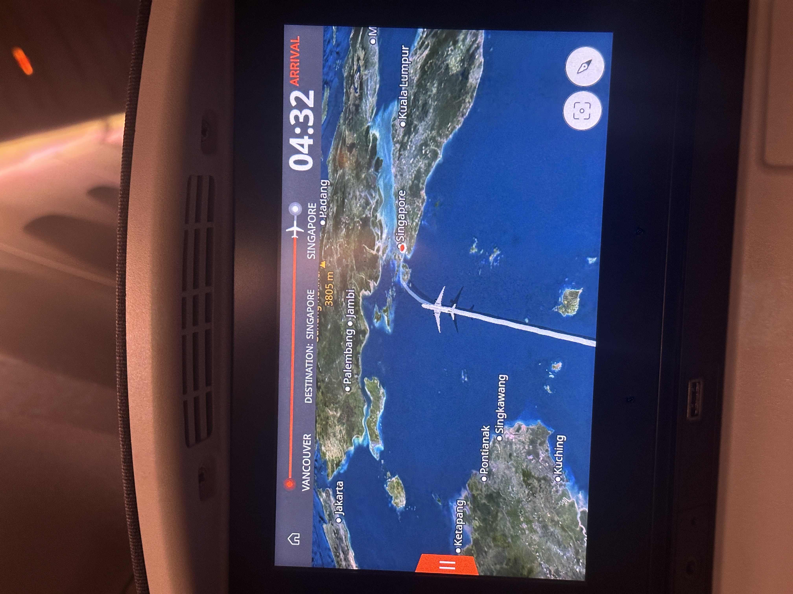
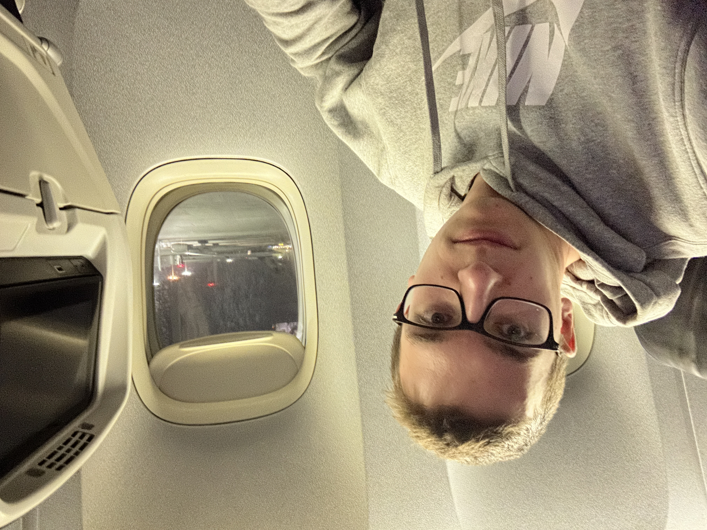

Welcome to my Singapore Study Abroad page! This page documents the countries that I travelled to on my semester abroad with photos, videos, and stories.
Please use the links below to navigate to the page for each country I visited:
The time leading up to my departure was filled with a mix of anticipation and nervousness. I applied to the program at Nanyang Technological University on a whim in July of 2025. It was difficult finding a program that offered the engineering classes that I needed that would also transfer back to UW-Madison. I cannot say that Singapore itself was I place that I particularly wanted to travel to and stay in for four months; however, it is the gateway to much of the rest of Asia, and classes were going to be taught in English.
David and I found an apartment for only the fall semester in anticipation of being gone on an exchange program in the spring. Throughout this semester I obtained my Singapore Student's Pass, selected my courses, and booked both my departure and return flights.
I left Madison on December 17, 2025, leaving just 14 days until my New Year's Day departure. In the next two weeks, I tried to cram as much visiting in as I could, while also making sure that I was packing everything I thought I might want.
Well a frosty 6°F New Year's Day morning finally came around. I woke up a little before 4am since I was going to try to catch a standby flight down to Chicago at 6am. My Dad and stepmon, Lisa, brought the truck and picked up my Mom, Alaina, and me on the way to CWA airport in Mosinee, WI. The drive over is where it really set in that I would be leaving for four months today. I ran through my packing list making sure I had everything.
Althoug uncertain if I would actually make it on the plane, I had a pretty good feeling so this was my final goodbye.

It was a bittersweet feeling as our plane pushed back and

Landed in Chicago and had to claim my bags, before transferring to other terminal. I had to go back through security. My next flight was with United from ORD -> YVR. While waiting at my gate I filled out the Singapore arrival card, a first of many. I had some time to kill before my next flight and walked through the terminal a few times. I boarded my next flight and was asked to switch seats with someone so they could sit together as a family and he offered me his economy+ sit which I graciously accepted. This flight lapsed quickly and before I knew it I was in Vancouver gearing up for my almost 17 hour flight from YVR -> SIN. For this reason I was really hoping I would have at least one seat open next to me, if not the whole row. You can imagine how thriled I was with the seatmap being this wide open only an hour before departure.

Here is a short video showing how empty the plane was. I was honestly surprised they would even fly it with it this empty.
I had to plan my sleep around my 4:25am arrival time in Singapore. This ultimately meant staying up for as long as long as possible at the start of the flight. Because of how empty the flight was, the staff were extra accomodating. I turned my row of four seats in to a bed and piled three of the little pillows on top of eachother. Fortunately, I was able to sleep the majority of the flight. The last couple of hours I had a bit of a headache but was able to get some water and walk around which helped. We landed right on time and I could not have been happier to know that I was going to get off this plane


They opened the door and immiediately the hot, humid air blanketed everything on the plane. I was immediately uncomfortable in the sweatpants and sweatshirt I had spent the last 24+ hours travelling in. I grabbed my bags and walked off the plane...